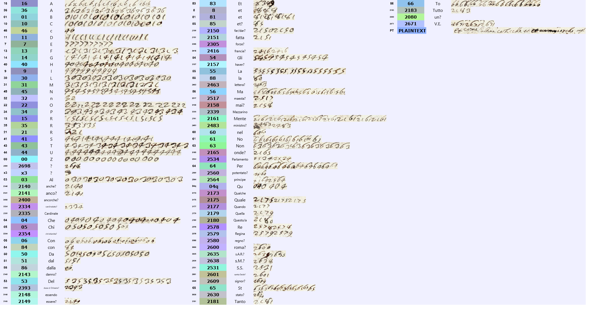

At a glanceKey recovered from ciphertext-only · four cipher pages
- The letter
- Niccolò Guidi di Bagno to the Secretariat of State, Paris, 5 January 1652.
- Where
- AAV, Segreteria di Stato, Francia 104, ff. 5r–7v; cipher on ff. 6r–7v. DECODE R5622.
- Credit
- Contributed by George Lasry. Solved by George Lasry. Transcription was made with CTTS (CrypTool Transcriber and Solver), using its machine-learning model and manual correction. Ciphertext-only cryptanalysis was performed with GPT-6 Astra and Anthropic Claude Opus 5.5 under Lasry's direction.
- The cipher
- One-, two- and four-digit values: letters, homophones, syllables and an alphabetical sequence of word/name codes.
- Coverage
- 1,796 cipher elements; 1,759 have unqualified key values, 35 tentative values and 2 remain unresolved. The edited prose also marks local gaps.
- What it says
- A bounty on Mazarin, threats to kill him in his cardinal's robes, and a proposed papal summons to protect the cardinalate and the royal family.
01 Context and document
Written from Paris on 5 January 1652, during the Fronde, the despatch concerns opposition to Cardinal Mazarin's return to France. Guidi di Bagno reports the Parlement's death sentence and 150,000-livre bounty, threats against Mazarin, and an appeal for papal intervention. The central dispute is whether a secular court can punish a cardinal or whether that authority belongs to the pope.
The submission covers all four cipher pages, ff. 6r–7v, in reading order P3, P4, P5, P1. The record also includes a clear opening leaf, f. 5r; it is not included in the four-page cipher reading.

This letter was not part of George Lasry, Beáta Megyesi and Nils Kopal, "Deciphering papal ciphers from the 16th to the 18th Century", Cryptologia 45(6), 479–540 (2021; published online 2020), DOI 10.1080/01611194.2020.1755915 (scope confirmed by George Lasry).
02 How the key was recovered
The attack recovered the grouping of a continuous digit stream into single-digit letters, two-digit letters and syllables, and four-digit word/name codes. Repeated Italian words and crib testing constrained the values; the roughly alphabetical nomenclator helped extend them. The manuscript was revisited to correct touching-digit ligatures, duplicated boxes, and the marked 04 = qu versus plain 04 = che. Values were checked across the four cipher pages. No matching historical key or decipherment was used. Clear words interspersed in the letter supply context, not a parallel decipherment of the cipher passages.
The September repository attempt had excluded the Francia 346 key and found OCR too noisy. Lasry's CTTS transcription enabled a new attack. No generic null-5 rule was accepted.
03 CTTS key

04 Full decryption and translation
All four cipher pages follow in manuscript order. Bold Italian is deciphered text; the words originally left clear are regular. Brackets and question marks preserve gaps and tentative readings. English follows each folio.
f. 6r
Due giorni dopo la partita dell'ultimo ordinario, con il quale auisai a
V.E. la resolucione che fu fatta nel Parlamento contro il Mazzarino,
fu stampato l'aresto, che mando a V.E. con la presente, nel quale
la pena capitale et la taglia impostali di cento
cinquanta mila [cancelled] lire, che si dichiara [2149: essere?] in-
corso per le prohibicioni fattegli dalla [2517: Maestà?] del Re
di tornare in [2416: Francia?], è fondata, perche fu espresso
negl' antecedenti aresti che, contrauenendo, sa-
rebbe caduto in pena [cancelled] di lesa maestà;
del quale delito pretendono che sia reo, essendo li uen-
ti [2698: ?] del pass.to alogiato in Sedan; et che il Parlamento sia
giudice competente del delito di lesa maestà di
qualunque persona, [2400: ancorché?] in ogni magior grado con-
stituita. Et io ho deto, con chi mi ha parlato, con
semplici discorsi, non hauere il Parlamento nè alcun
[2560: potentato?] te[m]porale questa facoltà, la quale totalmente
è riseruata al Sommo Pontefice; et che
tengo per certo che il Re sia per anularla. Il(?)
[2609: Signor?] [2393: Duca d'Orléans?] mi ha imposto di auisare S.S. che in[...]
per [la] quale è interuenuto [2635: S.A.R.?], che è grandemente deuoto della
Two days after the departure of the last ordinary [post], with which I informed Your Eminence of the resolution taken in the Parlement against Mazarin, the arrêt was printed; I send it to Your Eminence with the present letter. It contains the death penalty and the bounty of one hundred and fifty thousand livres placed on his head. It declares him [2149: to have?] incurred them by violating the prohibitions issued by [2517: His Majesty?] the King against his returning to [2416: France?]. It is grounded in the earlier arrêts, which stipulated that, if he contravened them, he would fall into the penalty of lèse-majesté. They claim he is guilty of this crime [2148: since?] he was lodged at Sedan on the twenty-[2698: ?] of last month. [They also claim] that the Parlement is the competent judge of the crime of lèse-majesté of any person whatsoever, [2400: even if?] constituted in the highest rank. And I told those who spoke to me, in plain conversation, that neither the Parlement nor any temporal [2560: power?] has this faculty, which is entirely reserved to the Supreme Pontiff. And [I told them] that I hold it for certain that the King will annul it. [2609: Lord?] [2393: Duke of Orléans?] has charged me to inform His Holiness that in [...], in which [2635: His Royal Highness?] took part (he being greatly devoted to
f. 6v
[2601: Santa Sede?], et della S.S., non ha [2158: mai?] intencione, con la dichiara-
cione di detta pena, di offendere la dignità
di cardinale, ma solo la persona di un nemico comu-
ne et di un huomo più temerario che mai sia [2630: stato?]
in tempo alcuno, et di magior[e] [d]anno(?) alla corona;
et a tutta la [2354: Christianità?], et pregando S.S. di liberare questo
[2580: Regno?] et il Re et et la casa reale da [2080: un?] huomo peruer-
so, con chiamarlo a [2600: Roma?], con pena della priuacione
del [2334: cardinalato?]; et hauere a pieno(?) credere che non obedisca, [2165: onde?]
quando uenga condannato da S.S., sarà tanto sprez-
zato, et la S.S. aquistarà la beneuolenza vniuersale della
[2416: Francia?], solleuando il Re pupillo dall'oppres-
sione di così fiero tiranno. Et la Regina [2141: anco?] ne
fosse per [2157: haver?] sentimento straordinario(?), quando considera-
sse il suo [2143: danno?], et del detto cardinale haurebbe d[a]
hauerlo caro, perche altrimenti lui sarà
amazato indubitatamente, et quella digni-
tà sarà tanto più offesa, et la Regina sarà
forzata ritirarsi, ouero uedrà la
totale rouina de' suoi figlioli; et soggiu-
ngendomi che il principe e[t] [x3, blotted] [blot] lui uniranno
[2601: the Holy See?] and to His Holiness), [he] has [2158: never?] had the intention, by declaring the said penalty, of offending the dignity of cardinal, but only the person of a common enemy and of a man more reckless than any there has ever [2630: been?] at any time, and of the greatest harm to the Crown and to all [2354: Christendom?]. And [he is] begging His Holiness to free this [2580: kingdom?], the King and the royal house from [2080: a?] perverse man, by recalling him to [2600: Rome?] under penalty of deprivation of the [2334: cardinalate?]. And [they] fully(?) believe that he will not obey; [2165: so that?], when he is condemned by His Holiness, he will be utterly despised. And His Holiness will gain the universal goodwill of [2416: France?], relieving the King, a minor, from the oppression of so fierce a tyrant. And even if the Queen [2141: too?] were to [2157: take?] exceptional(?) offence at this, on considering the [2143: harm?] to herself and to the said cardinal she would have reason to welcome it (tentative: several underlying readings are uncertain), because otherwise he will undoubtedly be killed, and that dignity [the cardinalate] would be all the more offended; and the Queen will be forced to withdraw, or will see the total ruin of her children. [The Duke] added that the Prince and he will unite
f. 7r
le loro [2305: forze?], et sono resoluti uolere che,
perisca il Mazzarino, quando non parta e uada tanto lon-
tano che più non habbi da temere del suo ritorno,
[85: et?] prega S.S. di [2150: far/dar?] subito questa resoluc-
ione, con inuiare per le poste persona che ese-
quisca il suo coma[blot]ndamento, al quale assisterà
[2635: S.A.R.?]. Et se desiderasse prima di [2150: far/dar?] questa dichi-
aracione che il principe e lui ne facessero
instanza per un atto giuridico, et lo faranno
auanti quella persona che S.S. manderà, la quale
potrebbe spedire secretamente, acciò non
hauesse impedimento per il uiagio; et promette che
il Parlamento istesso gli sarà fauoreuole. Et io
promissi di scriuere il tutto a V.E., ponendogli
qualche dificoltà circa il rispetto delle persone
reali, qualunque fossero gli difetti del [2483: ministro?], et la
disobedienza del cardinale alle paterne amoni-
cioni che S.S. gli hauer[à] fatte con il suo breue,
et che la disobedienza, quando S.S. si risoluesse
di fargli [2150: far/dar?] il preceto, potrebbe arriuare
a tal segno che fosse peggio che non [è] i[l]
their [2305: forces?], and that they are determined that Mazarin should perish unless he leaves and goes so far away that his return need no longer be feared. And he begs His Holiness to take this decision at once, and to dispatch an envoy by the relay-post service to execute his command, at which [2635: His Royal Highness?] will assist. And if [His Holiness] wished, before [2150: making/giving?] this declaration, that the Prince and he should petition for it by a judicial act, they will do so before the person whom His Holiness will send. His Holiness could dispatch him secretly, so that he should meet no hindrance on the journey. And he promises that the Parlement itself will support him. And I promised to write everything to Your Eminence, and I raised objections with him concerning the respect owed to royal persons, whatever the faults of the [2483: minister?]. [I also mentioned] the cardinal's disobedience to the paternal admonitions that His Holiness will have given him in his papal brief, and that this disobedience, if His Holiness resolved to have a formal injunction [2150: issued?] to him, could reach such a point that it would be worse than turning a blind eye to his misconduct.
f. 7v
dissimulare li suoi mancamenti. Et replicò
il [2393: Duca d'Orléans?]: vi dico che lo faremo amazare con l'ha-
bito di cardinale, se il Papa non lo chiama, o non lo
priua di quella dignità; et me ne protesto
con voi, come suo [2483: ministro?]. Et mi disse [2140: anche?] il [2393: Duca d'Orléans?] che
la Regina haueua già promesso che il Mazzarino non sa-
rebbe tornato, et fattolo scriuere dal Re al Parlamento,
[2140: anche?] con l'ultima [2463: lettera?] di [2638: S.M.?], che fu letta quando si
fece l'aresto; et che poi ha mancato così uergo-
gnosamente che tutti se ne scandalizano, et non
sarà alcuno che più se ne fidi. Non con[...]
[The last words of f. 7r and the first of f. 7v form one sentence, joined above.] And [2393: the Duke of Orléans?] replied: "I tell you, we will have him killed in his cardinal's habit, if the Pope does not summon him [to Rome] or does not deprive him of that dignity; and I formally declare this to you, as his [2483: minister?] [= representative]." And [2393: the Duke of Orléans?] [2140: also?] told me that the Queen had already promised that Mazarin would not return, and had had the King write this to the Parlement, [2140: also?] in the last [2463: letter?] of [2638: His Majesty?], which was read when the arrêt was made. And [he said] that she then broke her word so shamefully that everyone is scandalized by it, and that no one will trust her any more. [...]
05 Remaining uncertainties
- 2698 in the Sedan date: One occurrence after venti; the day must remain twenty-[…], not a guessed precise date.
- x3 at f. 6v line 21: Ink blot obscures the grouping.
- f. 6r lines 19–20 and f. 7v closing fragment: The edited reading retains explicit gaps; assigned letters alone do not recover the lost wording.
- Tentative nomenclator and Queen passage: 35 occurrences of 27 tentative labels; names and the conditional sentence remain marked with question marks.
The count of assigned key values must not be treated as a percentage of verified prose. The Sedan day, several names and the Queen's conditional sentence require further checking.
06 Sources and files
- key.txt
- transcription/all.txt
- decryption/all.txt
- snapshots/key.png
- snapshots/decryption key.png
- edited/all.txt
- reading_edition.txt
- translation_en.txt


Régibeau's study of Guidi di Bagno during the Fronde supplies historical background, not the plaintext of this despatch.
The source record identifies the Secretariat of State as recipient. The working edition names Chigi; its title “Cardinal” anticipates his promotion of 19 February 1652.
Research notes, CTTS files and measurements: targets/bagno1652/.